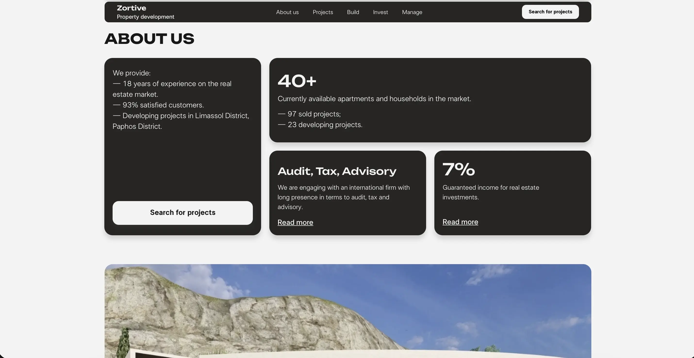
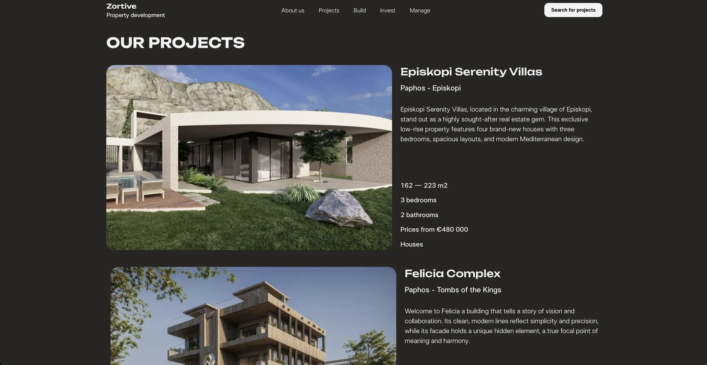
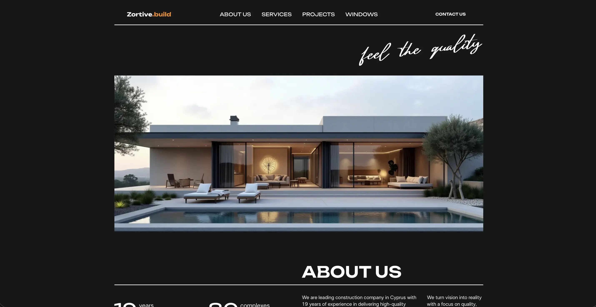
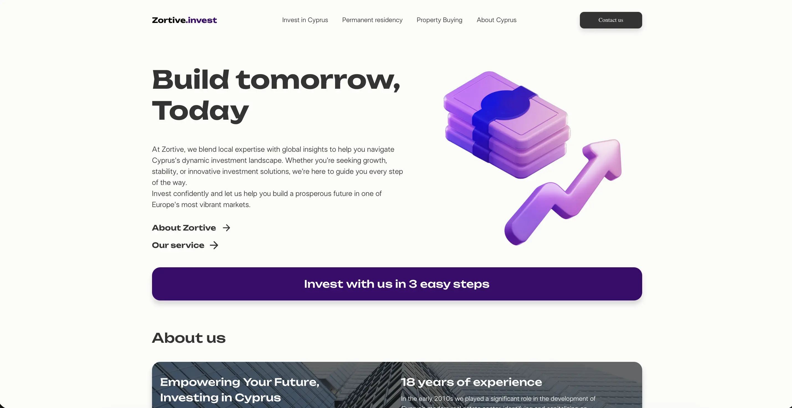
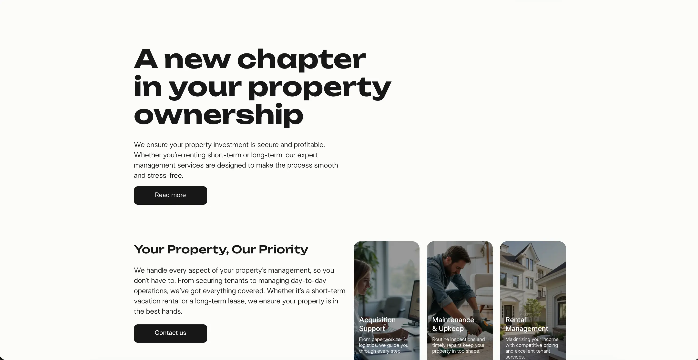

Корпоративный сайт Zortive для девелопера и инвестиционной компании на Кипре: единая точка входа к разделам Homes, Build, Invest и Manage. Задача — собрать три самостоятельных сайта про строительство, инвестиции и управление объектами в одну связную платформу, сохранив фокус на сервисах для клиентов.
Изначально у компании были разрозненные сайты: лендинги с жилыми комплексами, отдельный ресурс про инвестиции в Кипр и отдельный сайт про управление недвижимостью. Это усложняло навигацию и размывало образ бренда, поэтому нужно спроектировать общий сайт, где все услуги Zortive воспринимаются как части одного предложения.


На основной навигации появились ключевые разделы: About, Projects (Homes), Build, Invest, Manage — пользователь понимает, что компания строит, инвестирует и берёт объекты в управление под одной маркой. Каждый из бывших отдельных сайтов встроен как раздел со своим контентом, но с общей сеткой, типографикой и логикой переходов, чтобы не было ощущения разных ресурсов.



Build рассказывает о девелоперском опыте, текущих стройках и подходе к качеству,
связывая это с портфелем жилых проектов в разделе Homes.
Invest и его подпроекты (например, Permanent Residency) описывают инвестиционные сервисы,
цифры по доходности и шаги для инвестора, а Manage фокусируется
на управлении объектами и максимизации дохода от аренды.
Я собрал три отдельных сайта в единую информационную архитектуру, унифицировал дизайн, навигацию и формы заявок для всех направлений бизнеса. В итоге Zortive выглядит цельной компанией: пользователь может в одном месте выбрать объект, узнать про инвестиции в Кипр и заказать управление недвижимостью, не переходя на сторонние домены и не теряясь между сайтами.